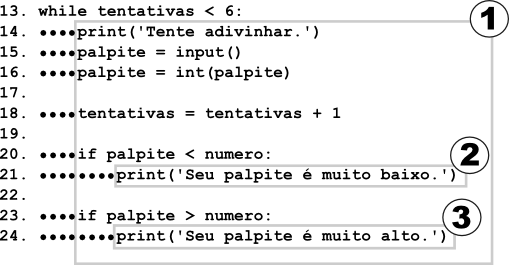
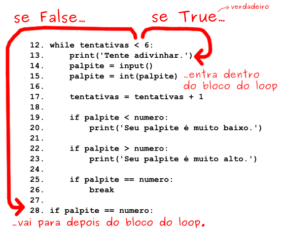

| Go to Chapter 3 - Strings | Go to Chapter 5 - Jokes |
We are going to make a "Guess the Number" game. In this game, the computer will think of a random number from 1 to 20, and ask you to guess the number. You only get six guesses, but the computer will tell you if your guess is too high or too low. If you guess the number within six tries, you win.
This is a good game for you to start with because it uses random numbers, loops, and input from the user in a fairly short program. As you write this game, you will learn how to convert values to different data types (and why you would need to do this).
Because this program is a game, we'll call the user the player, but the word "user" would be correct too.
Here is what our game will look like to the player when the program is run. The text that the player types in is in bold.
Enter this code exactly as it appears here, and then save it by clicking on the menu and then . Give it a file name like guess.py then run it by pressing the F5 key. Don't worry if you don't understand the code now, I'll explain it step by step.
Here is the source code for our Guess the Number game. When you enter this code into the file editor, be sure to pay attention to the spacing at the front of some of the lines. Some lines have four or eight spaces in front of them. After you have typed in the code, save the file as guess.py. You can run the program from the file editor by pressing F5. If you see an error message, check that you have typed the program in exactly as written.
If you don't want to type all this code, you can download it from this book's website at the URL http://inventwithpython.com/chapter4.
Important Note! Be sure to run this program with Python 3, and not Python 2. The programs in this book use Python 3, and you'll get errors if you try to run them with Python 2. You can click on and then to find out what version of Python you have.
Even though we are entering our source code into a new file editor window, we can return to the shell to enter individual instructions in order to see what they do. The interactive shell is very good for experimenting with different instructions when we are not running a program. You can return to the interactive shell by clicking on its window or on its taskbar button. In Windows or Mac OS X, the taskbar or dock is on the bottom of the screen. On Linux the taskbar may be located along the top of the screen.
If the program doesn't seem to work after you've typed it, check to see if you have typed the code exactly as it appears in this book. You can also copy and paste your code to the online "diff" tool at http://inventwithpython.com/diff. The diff tool will show you how your code is different from the source code in this book. In the file editor, press Ctrl-A to "Select All" the text you've typed, then press Ctrl-C to copy the text to the clipboard. Then, paste this text by clicking in the diff tool's text field on the website and click the "Compare" button. The website will show you any differences between your code and the code in this book.
There is a diff tool for each program in this book on the http://inventwithpython.com website. A video tutorial of how to use the diff tool is available from this book's website at http://inventwithpython.com/videos/.
Let's look at each line of code in turn to see how this program works.
This line is a comment. Comments were introduced in our Hello World program in Chapter 3. Remember that Python will ignore everything after the # sign. This just reminds us what this program does.
This is an import statement. Statements are not functions (notice that neither import nor random has parentheses after its name). Remember, statements are instructions that perform some action but do not evaluate to a value. You have already seen statements: assignment statements store a value into a variable (but the statement does not evaluate to anything).
While Python includes many built-in functions, some functions exist in separate programs called modules. Modules are Python programs that contain additional functions. We use the functions of these modules by bringing them into our programs with the import statement. In this case, we're importing the module random.
The import statement is made up of the import keyword followed by the module name. Together, the keyword and module name make up the statement. Line 2 then is an import statement that imports the module named random which contains several functions related to random numbers. (We'll use one of these functions later to have the computer come up with a random number for us to guess.)
This line creates a new variable named guessesTaken. We'll store the number of guesses the player makes in this variable. Since the player hasn't made any guesses so far, we store the integer 0 here.
Lines 6 and 7 are the same as the lines in the Hello World program that we saw in Chapter 3. Programmers often reuse code from their other programs when they need the program to do something that they've already coded before.
Line 6 is a function call to the print() function. Remember that a function is like a mini-program that our program runs, and when our program calls a function it runs this mini-program. The code inside the print() function displays the string you passed it inside the parentheses on the screen.
When these two lines finish executing, the string that is the player's name will be stored in the myName variable. (Remember, the string might not really be the player's name. It's just whatever string the player typed in. Computers are dumb and just follow their programs no matter what.)
In Line 9 we call a new function named randint(), and then store the return value in a variable named number. Remember that function calls are expressions because they evaluate to a value. We call this value the function call's return value.
Because the randint() function is provided by the random module, we precede it with random. (don't forget the period!) to tell our program that the function randint() is in the random module.
The randint() function will return a random integer between (and including) the two integers we give it. Here, we give it the integers 1 and 20 between the parentheses that follow the function name (separated by a comma). The random integer that randint() returns is stored in a variable named number; this is the secret number the player is trying to guess.
Just for a moment, go back to the interactive shell and enter import random to import the random module. Then enter random.randint(1, 20) to see what the function call evaluates to. It should return an integer between 1 and 20. Now enter the same code again and the function call will probably return a different integer. This is because each time the randint() function is called, it returns some random number, just like when you roll dice you will get a random number each time.
Whenever we want to add randomness to our games, we can use the randint() function. And we use randomness in most games. (Think of how many board games use dice.)
You can also try out different ranges of numbers by changing the arguments. For example, enter random.randint(1, 4) to only get integers between 1 and 4 (including both 1 and 4). Or try random.randint(1000, 2000) to get integers between 1000 and 2000. Below is an example of calling the random.randint() function and seeing what values it returns. The results you get when you call the random.randint() function will probably be different (it is random, after all).
We can change the game's code slightly to make the game behave differently. Try changing line 9 and 10 from this:
into these lines:
And now the computer will think of an integer between 1 and 100. Changing line 9 will change the range of the random number, but remember to change line 10 so that the game also tells the player the new range instead of the old one.
By the way, be sure to enter random.randint(1, 20) and not just randint(1, 20), or the computer will not know to look in the random module for the randint() function and you'll get an error like this:
Remember, your program needs to run import random before it can call the random.randint() function. This is why import statements usually go at the beginning of the program.
The integer values between the parentheses in the random.randint(1, 20) function call are called arguments. Arguments are the values that are passed to a function when the function is called. Arguments tell the function how to behave. Just like the player's input changes how our program behaves, arguments are inputs for functions.
Some functions require that you pass them values when you call them. For example, look at these function calls:
The input() function has no arguments but the print() function call has one and the randint() function call has two. When we have more than one argument, we separate each with commas, as you can see in this example. Programmers say that the arguments are delimited (that is, separated) by commas. This is how the computer knows where one value ends and another begins.
If you pass too many or too few arguments in a function call, Python will display an error message, as you can see below. In this example, we first called randint() with only one argument (too few), and then we called randint() with three arguments (too many).
Notice that the error message says we passed 2 and 4 arguments instead of 1 and 3. This is because Python always passes an extra, invisible argument. This argument is beyond the scope of this book, and you don't have to worry about it.
Lines 10 and 12 greets the player and tells them about the game, and then starts letting the player guess the secret number. Line 10 is fairly simple, but line 12 introduces a useful concept called a loop.
In Line 10 the print() function welcomes the player by name, and tells them that the computer is thinking of a random number.
But wait - didn't I say that the print() function takes only one string? It may look like there's more than one string there. But look at the line carefully. The plus signs concatenate the three strings to evaluate down to one string, and that is the one string the print() function prints. It might look like the commas are separating the strings, but if you look closely you see that the commas are inside the quotes, and part of the strings themselves.
Line 12 has something called a while statement, which indicates the beginning of a while loop. Loops are parts of code that are executed over and over again. But before we can learn about while loops, we need to learn a few other concepts first. Those concepts are blocks, Booleans, comparison operators, conditions, and finally, the while statement.
A block is one or more lines of code grouped together with the same minimum amount of indentation. You can tell where a block begins and ends by looking at the line's indentation (that is, the number of spaces in front of the line).
A block begins when a line is indented by four spaces. Any following line that is also indented by four spaces is part of the block. A block within a block begins when a line is indented with another four spaces (for a total of eight spaces in front of the line). The block ends when there is a line of code with the same indentation before the block started.
Below is a diagram of the code with the blocks outlined and numbered. The spaces have black squares filled in to make them easier to count.

Figure 4-1: Blocks and their indentation. The black dots represent spaces.
For example, look at the code in Figure 4-1. The spaces have been replaced with dark squares to make them easier to count. Line 12 has an indentation of zero spaces and is not inside any block. Line 13 has an indentation of four spaces. Since this indentation is larger than the previous line's indentation, we can tell that a new block has started. Lines 14, 15, 17 and 19 also have four spaces for indentation. Both of these lines have the same amount of indentation as the previous line, so we know they are in the same block. (We do not count blank lines when we look for indentation.)
Line 20 has an indentation of eight spaces. Eight spaces is more than four spaces, so we know a new block has started. This is a block that is inside of another block.
Line 22 only has four spaces. The line before line 22 had a larger number of spaces. Because the indentation has decreased, we know that block has ended. Line 22 is in the same block as the other lines with four spaces.
Line 23 increases the indentation to eight spaces, so again a new block has started.
To recap, line 12 is not in any block. Lines 13 to 23 all in one block (marked with the circled 1). Line 20 is in a block in a block (marked with a circled 2). And line 23 is the only line in another block in a block (marked with a circled 3).
When you type code into IDLE, each letter is the same width. You can count the number of letters above or below the line to see how many spaces you have put in front of that line of code.
In this figure, the lines of code inside box 1 are all in the same block, and blocks 2 and 3 are inside block 1. Block 1 is indented with at least four spaces from the left margin, and blocks 2 and 3 are indented eight spaces from the left margin. A block can contain just one line. Notice that blocks 2 and 3 are only one line each.
The Boolean data type has only two values: True or False. These values are case-sensitive and they are not string values; in other words, you do not put a ' quote character around them. We will use Boolean values (also called bools) with comparison operators to form conditions. (Explained next.)
In line 12 of our program, the line of code containing the while statement:
The expression that follows the while keyword (guessesTaken < 6) contains two values (the value in the variable guessesTaken, and the integer value 6) connected by an operator (the < sign, the "less than" sign). The < sign is called a comparison operator.
The comparison operator is used to compare two values and evaluate to a True or False Boolean value. A list of all the comparison operators is in Table 4-1.
| Operator Sign | Operator Name |
|---|---|
| < | Less than |
| > | Greater than |
| <= | Less than or equal to |
| >= | Greater than or equal to |
| == | Equal to |
| != | Not equal to |
A condition is an expression that combines two values with a comparison operator (such as < or >) and evaluates to a Boolean value. A condition is just another name for an expression that evaluates to True or False. You'll find a list of other comparison operators in Table 4-1.
Conditions always evaluate to a Boolean value: either True or False. For example, the condition in our code, guessesTaken < 6 asks "is the value stored in guessesTaken less than the number 6?" If so, then the condition evaluates to True. If not, the condition evaluates to False.
In the case of our Guess the Number program, in line 4 we stored the value 0 in guessesTaken. Because 0 is less than 6, this condition evaluates to the Boolean value of True. Remember, a condition is just a name for an expression that uses comparison operators such as < or !=.
Enter the following expressions in the interactive shell to see their Boolean results:
The condition 0 < 6 returns the Boolean value True because the number 0 is less than the number 6. But because 6 is not less than 0, the condition 6 < 0 evaluates to False. 50 is not less than 10, so 50 < 10 is False. 10 is less than 11, so 10 < 11 is True.
But what about 10 < 10? Why does it evaluate to False? It is False because the number 10 is not smaller than the number 10. They are exactly the same size. If a girl named Alice was the same height as a boy named Bob, you wouldn't say that Alice is taller than Bob or that Alice is shorter than Bob. Both of those statements would be false.
Try entering some conditions into the shell to see how these comparison operators work:
Notice the difference between the assignment operator (=) and the "equal to" comparison operator (==). The equal (=) sign is used to assign a value to a variable, and the equal to (==) sign is used in expressions to see whether two values are equal. It's easy to accidentally use one when you meant to use the other, so be careful of what you type in.
Two values that are different data types will always be not equal to each other. For example, try entering the following into the interactive shell:
The while statement marks the beginning of a loop. Sometimes in our programs, we want the program to do something over and over again. When the execution reaches a while statement, it evaluates the condition next to the while keyword. If the condition evaluates to True, the execution moves inside the while-block. (In our program, the while-block begins on line 13.) If the condition evaluates to False, the execution moves all the way past the while-block. (In our program, the first line after the while-block is line 28.)
A while statement always has a colon (the : sign) after the condition.

Figure 4-2: The while loop's condition.
Figure 4-2 shows how the execution flows depending on the condition. If the condition evaluates to True (which it does the first time, because the value of guessesTaken is 0), execution will enter the while-block at line 13 and keep going down. Once the program reaches the end of the while-block, instead of going down to the next line, it jumps back up to the while statement's line (line 12). It then re-evaluates the condition, and if it still evaluates to True we enter the while-block again.
This is how the loop works. As long as the condition is True, the program keeps executing the code inside the while-block repeatedly until we reach the end of the while-block and the condition is False. And, until guessesTaken is equal to or greater than 6, we will keep looping.
Think of the while statement as saying, "while this condition is true, keep looping through the code in this block".
You can make this game harder or easier by changing the number of guesses the player gets. All you have to do is change this line:
into this line:
...and now the player only gets four guesses instead of six guesses. By setting the condition to guessesTaken < 4, we ensure that the code inside the loop only runs four times instead of six. This makes the game much more difficult. To make the game easier, set the condition to guessesTaken < 8 or guessesTaken < 10, which will cause the loop to run a few more times than before and accept more guesses from the player.
Of course, if we removed line 17 (guessesTaken = guessesTaken + 1) altogether then the guessesTaken would never increase and the condition would always be True. This would give the player an unlimited number of guesses.
Lines 13 to 17 ask the player to guess what the secret number is and lets them enter their guess. We store this guess in a variable, and then convert that string value into an integer value.
The program now asks us for a guess. We type in our guess and that number is stored in a variable named guess.
In line 15, we call a new function called int(). The int() function takes one argument. The input() function returned a string of text that player typed. But in our program, we will want an integer, not a string. If the player enters 5 as their guess, the input() function will return the string value '5' and not the integer value 5. Remember that Python considers the string '5' and the integer 5 to be different values. So the int() function will take the string value we give it and return the integer value form of it.
Let's experiment with the int() function in the interactive shell. Try typing the following:
We can see that the int('42') call will return the integer value 42, and that int(42) will do the same (though it is kind of pointless to convert an integer to an integer). However, even though you can pass a string to the int() function, you cannot just pass any string. For example, passing 'hello' to int() (like we do in the int('hello') call) will result in an error. The string we pass to int() must be made up of numbers.
The integer we pass to int() must also be numerical, rather than text, which is why int('forty-two') also produces an error. That said, the int() function is slightly forgiving; if our string has spaces on either side, it will still run without error. This is why the int(' 42 ') call works.
The 3 + int('2') line shows an expression that adds an integer 3 to the return value of int('2') (which is the integer 2). The expression evaluates to 3 + 2, which then evaluates to 5. So even though we cannot add an integer and a string (3 + '2' would show us an error), we can add an integer to a string that has been converted to an integer.
Remember, back in our program on line 15 the guess variable originally held the string value of what the player typed. We will overwrite the string value stored in guess with the integer value returned by the int() function. This is because we will later compare the player's guess with the random number the computer came up with. We can only compare two integer values to see if one is greater (that is, higher) or less (that is, lower) than the other. We cannot compare a string value with an integer value to see if one is greater or less than the other, even if that string value is numeric such as '5'.
In our Guess the Number game, if the player types in something that is not a number, then the function call int() will result in an error and the program will crash. In the other games in this book, we will add some more code to check for error conditions like this and give the player another chance to enter a correct response.
Notice that calling int(guess) does not change the value in the guess variable. The code int(guess) is an expression that evaluates to the integer value form of the string stored in the guess variable. We must assign this return value to guess in order to change the value in guess to an integer with this full line: guess = int(guess)
Once the player has taken a guess, we want to increase the number of guesses that we remember the player taking.
The first time that we enter the loop block, guessesTaken has the value of 0. Python will take this value and add 1 to it. 0 + 1 is 1. Then Python will store the new value of 1 to guessesTaken.
Think of line 17 as meaning, "the guessesTaken variable should be one more than what it already is".
When we add one to an integer value, programmers say they are incrementing the value (because it is increasing by one). When we subtract one from a value, we are decrementing the value (because it is decreasing by one). The next time the loop block loops around, guessesTaken will have the value of 1 and will be incremented to the value 2.
Lines 19 and 20 check if the number that the player guessed is less than the secret random number that the computer came up with. If so, then we want to tell the player that their guess was too low by printing this message to the screen.
Line 19 begins an if statement with the keyword, if. Next to the if keyword is the condition. Line 20 starts a new block (you can tell because the indentation has increased from line 19 to line 20.) The block that follows the if keyword is called an if-block. An if statement is used if you only want a bit of code to execute if some condition is true. Line 19 has an if statement with the condition guess < number. If the condition evaluates to True, then the code in the if-block is executed. If the condition is False, then the code in the if-block is skipped.

Figure 4-3: if and while statements.
Like the while statement, the if statement also has a keyword, followed by a condition, a colon, and then a block of code. See Figure 4-3 for a comparison of the two statements.
The if statement works almost the same way as a while statement, too. But unlike the while-block, execution does not jump back to the if statement at the end of the if-block. It just continues on down to the next line. In other words, if statements won't loop.
If the condition is True, then all the lines inside the if-block are executed. The only line inside this if-block on line 19 is a print() function call.
If the integer the player enters is less than the random integer the computer thought up, the program displays Your guess is too low. If the integer the player enters is equal to or larger than the random integer (in which case, the condition next to the if keyword would have been False), then this block would have been skipped over.
Lines 22 to 26 in our program check if the player's guess is either too big or exactly equal to the secret number.
If the player's guess is larger than the random integer, we enter the if-block that follows the if statement. The print() line tells the player that their guess is too big.
This if statement's condition checks to see if the guess is equal to the random integer. If it is, we enter line 26, the if-block that follows it.
The line inside the if-block is a break statement that tells the program to immediately jump out of the while-block to the first line after the end of the while-block. (The break statement does not bother re-checking the while loop's condition, it just breaks out immediately.)
The break statement is just the break keyword by itself, with no condition or colon.
If the player's guess is not equal to the random integer, we do not break out of the while-block, we will reach the bottom of the while-block anyway. Once we reach the bottom of the while-block, the program will loop back to the top and recheck the condition (guessesTaken < 6). Remember after the guessesTaken = guessesTaken + 1 line of code executed, the new value of guessesTaken is 1. Because 1 is less than 6, we enter the loop again.
If the player keeps guessing too low or too high, the value of guessesTaken will change to 2, then 3, then 4, then 5, then 6. If the player guessed the number correctly, the condition in the if guess == number statement would be True, and we would have executed the break statement. Otherwise, we keep looping. But when guessesTaken has the number 6 stored, the while statement's condition is False, since 6 is not less than 6. Because the while statement's condition is False, we will not enter the loop and instead jump to the end of the while-block.
The remaining lines of code run when the player has finished guessing (either because the player guessed the correct number, or because the player ran out of guesses). The reason the player exited the previous loop will determine if they win or lose the game, and the program will display the appropriate message on the screen for either case.
Unlike the code in line 25, this line has no indentation, which means the while-block has ended and this is the first line outside the while-block. When we left the while block, we did so either because the while statement's condition was False (when the player runs out of guesses) or if we executed the break statement (when the player guesses the number correctly). With line 28, check again to see if the player guessed correctly. If so, we enter the if-block that follows.
Lines 29 and 30 are inside the if-block. They only execute if the condition in the if statement on line 28 was True (that is, if the player correctly guessed the computer's number).
In line 29 we call the new function str(), which returns the string form of an argument. We use this function because we want to change the integer value in guessesTaken into its string version because we can only use strings in calls to print().
Line 29 tells the player that they have won, and how many guesses it took them. Notice in this line that we change the guessesTaken value into a string because we can only add (that is, concatenate) strings to other strings. If we were to try to add a string to an integer, the Python interpreter would display an error.
In Line 32, we use the comparison operator != with the if statement's condition to mean "is not equal to." If the value of the player's guess is lower or higher than (and therefore, not equal to) the number chosen by the computer, then this condition evaluates to True, and we enter the block that follows this if statement on line 33.
Lines 33 and 34 are inside the if-block, and only execute if the condition is True.
In this block, we tell the player what the number is because they failed to guess correctly. But first we have to store the string version of number as the new value of number.
This line is also inside the if-block, and only executes if the condition was True. At this point, we have reached the end of the code, and the program terminates.
Congratulations! We've just programmed our first real game!
If someone asked you, "What exactly is programming anyway?" what could you say to them? Programming is just the action of writing code for programs, that is, creating programs that can be executed by a computer.
"But what exactly is a program?" When you see someone using a computer program (for example, playing our Guess The Number game), all you see is some text appearing on the screen. The program decides what exact text to show on the screen (which is called the output), based on its instructions (that is, the program) and on the text that the player typed on the keyboard (which is called the input). The program has very specific instructions on what text to show the user. A program is just a collection of instructions.
"What kind of instructions?" There are only a few different kinds of instructions, really.
And that's it, just those four things. Of course, there are many details about those four types of instructions. In this book you will learn about new data types and operators, new flow control statements besides if, while and break, and several new functions. There are also different types of I/O (input from the mouse, and outputting sound and graphics and pictures instead of just text.)
For the person using your programs, they really only care about that last type, I/O. The user types on the keyboard and then sees things on the screen or hears things from the speakers. But for the computer to figure out what sights to show and what sounds to play, it needs a program, and programs are just a bunch of instructions that you, the programmer, have written.
If you have access to the Internet and a web browser, you can go to this book's website at http://inventwithpython.com/traces you will find a page that traces through each of the programs in this book. By following along with the trace line by line, it might become more clear what the Guess the Number program does. This website just shows a simulation of what happens when the program is run. No actual code is really being executed.

Figure 4-4: The tracing web page.
Figure 4-4: The tracing web page.
The left side of the web page shows the source code, and the highlighted line is the line of code that is about to be executed. You execute this line and move to the next line by clicking the "Next" button. You can also go back a step by clicking the "Previous" button, or jump directly to a step by typing it in the white box and clicking the "Jump" button.
On the right side of the web page, there are three sections. The "Current variable values" section shows you each variable that has been assigned a value, along with the value itself. The "Notes" section will give you a hint about what is happening on the highlighted line. The "Program output" section shows the output from the program, and the input that is sent to the program. (This web page automatically enters text to the program when the program asks.)
So go to each of these web pages and click the "Next" and "Previous" buttons to trace through the program like we did above.
A video tutorial of how to use the online tracing tool is available from this book's website at http://inventwithpython.com/videos/.
| Go to Chapter 3 - Strings | Go to Chapter 5 - Jokes |